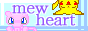

the web is filled with sites and sights to see, and these are just a few that i really enjoy! this page will be updated periodically whenever i find more.
if you want to link to either coda or i's sites, get our buttons from our about page!
Other sites by me
a search engine for nekoweb, inspired by neosearch

an "informational shrine" to parun's rpgmaker games, also run by coda and i.
in desperate need of updates T^T


Personal sites


Fandom-centric


Graphics, etc.



- Pokemon Asset Archive : Quite literally every Pokemon asset you'd ever need, created by Lewchube.
- Undertale textdump : The complete script of Undertale, coded by hushbugger.
- MOON Rpg Merchandise : Show some Love.
- Konaka's Digimon Tamers notes : Behind the scenes of Digimon Tamers.
- Love-de-Lic media archive : Archive of things from the minds behind MOON, Chulip, Chibi-robo, and more.
- Mother4ever : Starmen (and co.)'s modern successor.
- Wikimon : The best Digimon wiki out there.
media
fansites
- Dark Claws : A Sneasel fansite.
- Imprison : A Ninetales fansite.
- Archive : The most important site on the web. Here's my archived stuff.
- Ezgif : Everything gifs, made easy.
- Transparent Textures : For backgrounds and other stuff.
- Neosearch : A Neocities based search engine, for Neocities sites.
- Animista : CSS Animations, customizable and at the ready.
web
misc
- Genuine Mustelids : The BEST Source for all things Mustelidae!